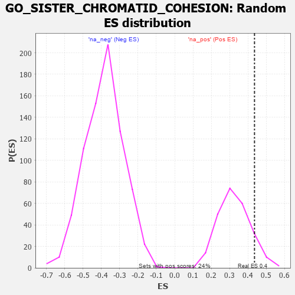

| | | Dataset | 7d |
| Phenotype | NoPhenotypeAvailable |
| Upregulated in class | na_pos |
| GeneSet | GO_SISTER_CHROMATID_COHESION |
| Enrichment Score (ES) | 0.43609548 |
| Normalized Enrichment Score (NES) | 1.3426781 |
| Nominal p-value | 0.09917355 |
| FDR q-value | 0.39236978 |
| FWER p-Value | 1.0 |
Table: GSEA Results Summary
 Fig 1: Enrichment plot: GO_SISTER_CHROMATID_COHESION
Fig 1: Enrichment plot: GO_SISTER_CHROMATID_COHESION
Profile of the Running ES Score & Positions of GeneSet Members on the Rank Ordered List
| PROBE | GENE SYMBOL | GENE_TITLE | RANK IN GENE LIST | RANK METRIC SCORE | RUNNING ES | CORE ENRICHMENT | | 1 | AXIN2 | | | 383 | 0.713 | 0.0366 | Yes |
| 2 | CDC20 | | | 480 | 0.644 | 0.1010 | Yes |
| 3 | MRE11 | | | 693 | 0.560 | 0.1410 | Yes |
| 4 | RAD21 | | | 779 | 0.538 | 0.1942 | Yes |
| 5 | HDAC8 | | | 881 | 0.510 | 0.2422 | Yes |
| 6 | POGZ | | | 887 | 0.509 | 0.3021 | Yes |
| 7 | REC8 | | | 1028 | 0.478 | 0.3413 | Yes |
| 8 | STAG2 | | | 1069 | 0.470 | 0.3921 | Yes |
| 9 | PDS5B | | | 1432 | 0.403 | 0.3945 | Yes |
| 10 | ESPL1 | | | 1734 | 0.349 | 0.3981 | Yes |
| 11 | WAPL | | | 1758 | 0.344 | 0.4361 | Yes |
| 12 | FEN1 | | | 2446 | 0.237 | 0.3778 | No |
| 13 | PHB2 | | | 2712 | 0.197 | 0.3679 | No |
| 14 | SMC3 | | | 3701 | 0.042 | 0.2486 | No |
| 15 | NIPBL | | | 3900 | 0.010 | 0.2249 | No |
| 16 | ESCO2 | | | 4605 | -0.119 | 0.1505 | No |
| 17 | SMC1A | | | 4609 | -0.120 | 0.1643 | No |
| 18 | FBXW7 | | | 4816 | -0.161 | 0.1576 | No |
| 19 | ATRX | | | 4929 | -0.184 | 0.1654 | No |
| 20 | DDX11 | | | 5102 | -0.225 | 0.1705 | No |
| 21 | PLK1 | | | 6082 | -0.500 | 0.1068 | No |
| 22 | TNKS | | | 6138 | -0.516 | 0.1612 | No |
| 23 | BOD1 | | | 6320 | -0.583 | 0.2077 | No |
Table: GSEA details [plain text format]

Fig 2: GO_SISTER_CHROMATID_COHESION: Random ES distribution
Gene set null distribution of ES for GO_SISTER_CHROMATID_COHESION